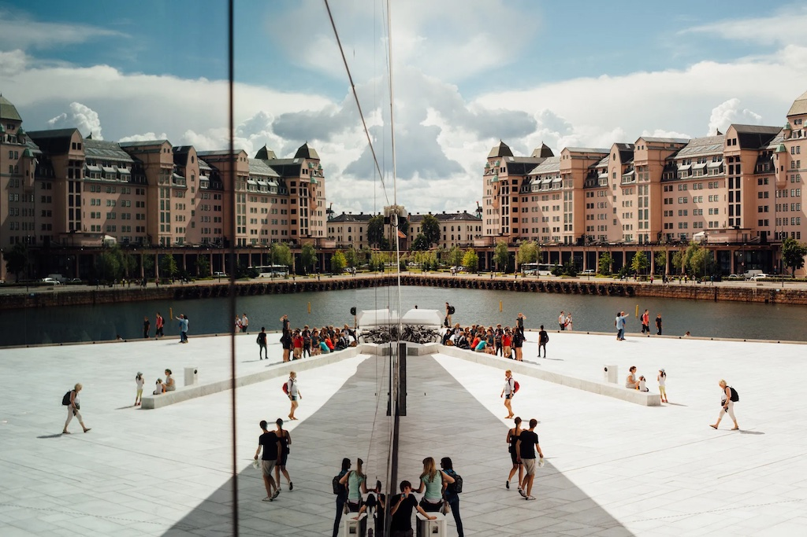

━ ABOUT US
We offer guided tours in Norway - one of the most beautiful Nordic countries. We will cross the entire country, from Oslo to Tromsø, visit amazing cities, and see stunning nature.
The program is carefully thought out, there are no more than 10 people in each group plus an English-speaking guide. Comfortable vans and nights in 3*+ hotels are included in the price.
Some tour conditions may be changed according to the season. To learn more about the program, please contact us.
We conduct tours all year round, almost every week, but the most comfortable weather for sightseeing is in summer.
If necessary, we help you apply for a visa to Norway, as well as advise what things you should take with you..
━ TOUR ITINERARY
We will travel through almost the entire country, from Oslo to Tromsø. Many amazing places await us, including bustling cities and fishing villages. You will see the real Norway in all its glory.
We are a licensed tour operator and have all the necessary permits to conduct tours in Norway.
A professional guide will accompany you along the entire route, who will show you the most beautiful places.
Norway will steal your heart from the very first day of our trip. It is impossible not to fall in love with it!
━ ABOUT NORWAY
It is believed that the name of this distinctive country and one of the most breathtaking places on our planet
was given by the Old-Norse word Norðrvegr, literally meaning "way to the north."
Norway is famous for green forests and mountains, pristine glaciers, noisy and cool waterfalls, lakes, beautiful fjords,
white nights, and the polar lights. The beauty of Norway cannot be described in words!
Norway is also known for its striking landscapes, hunting, fishing, interesting and entertaining history, and culture.
All this attracts travel lovers who come to Norway regardless of the season from all over the world.
━ PLACES
Read more about each place from our itinerary below.
Oslo - First point
1 night. Scandic Hotel
We start our journey from Oslo, the capital of Norway. On a walking tour, you will see the opera house, parliament, the royal palace, and more.
Trondheim - Second point
2 night. Radisson Hotel
The main Christian landmark of Norway, the Nidaros Cathedral is located here. The architectural sign of the new era is a high TV tower with a revolving restaurant.
Bodø - Third point
2 night. Gronheim Guesthouse
We've left "urban" Norway, and Bodø is our first stop for no sightseeing. We will simply go fishing, enjoy the fresh air, and try dishes with salmon and trout.
Lofoten Islands - Fourth point
2 night. Cabinn Guesthouse
The islands are located in the harsh waters of the Norwegian Sea. It is a land of wild nature, majestic mountains, fjords, and long sandy beaches.
Tromsø - Final point
3 night. Scandic Hotel
The largest Norwegian city in the Arctic Circle is also called “Paris of the North”. The main attractions are the Polar Museum and the Arctic Cathedral.
Complete the form below, and we will contact you soon to discuss the details!